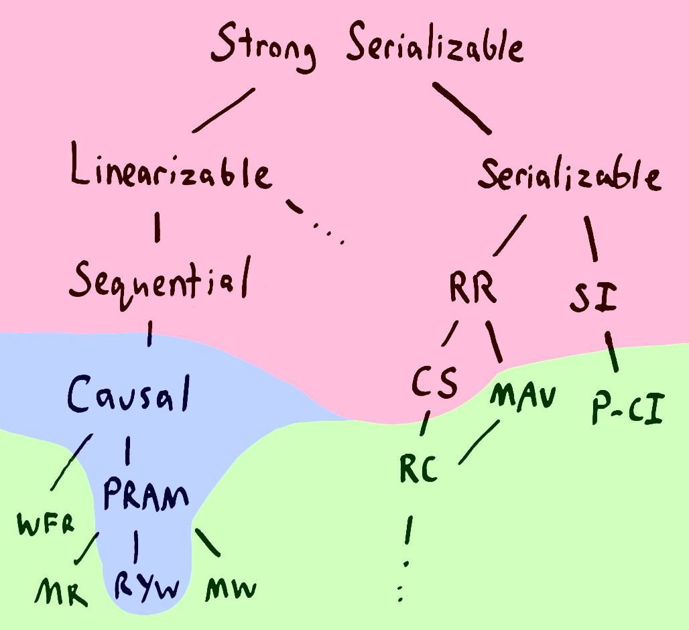
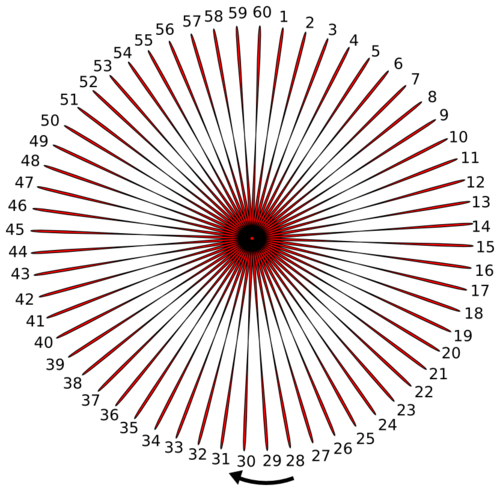
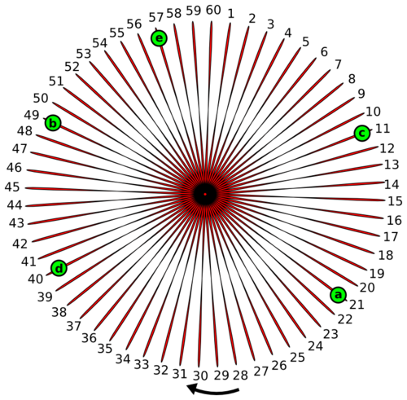
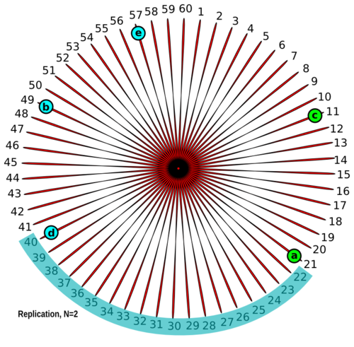
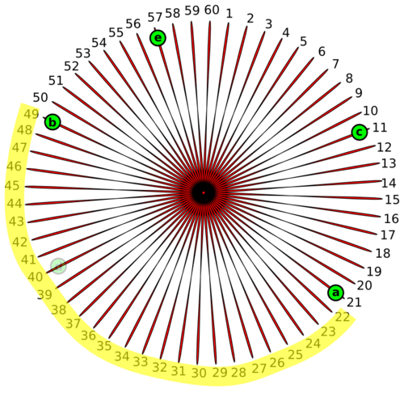
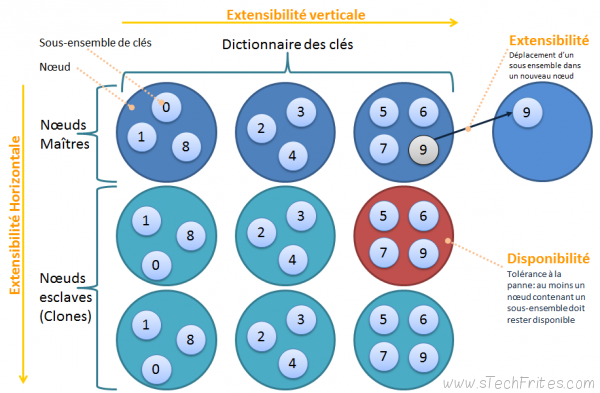

Distributed Databases
Why Go Distributed ?
- Scale out
- Uptime
Our problems
- servers die
- network is unreliable
- Packet drop
- High latency
- Complete failure

=> Dreaded "split-brain" scenario in which a system splits and diverges
Some Theory
- ACID
- CAP
- Consensus Protocol
- Dynamo
- Bigtable
Traditional RDBMS: ACID
- Atomicity: "All of nothing", if part fails, the entire transaction fails.
- Consistency: Follow databases rules (key, uniqueness).
- Isolation: Transactions will wait if at the same time and touching the same data.
- Durability: Once a transaction is commited, it stays so.
- In a one-node DB, this is easier, as the state is centralized.
=> In a distributed environment, this requires high coordination (locks) to ensure linearizability of state changes
- => Same issue at a much smaller scale in multi CPU machines: access to memory must be synchronized

CAP Principle (Eric Brewer in 2000)

- Consistency: All nodes always give the same answer. Not the same C in ACID.
- Availability: Nodes always answer queries and accept updates.
- Parition-tolerance: System continues working even if one or more nodes vanish.
=> P is not really avoidable, and you can only have two of these
=> All about tradeoff between C and A through more or less asynchrone replication
=> Also latency tradoff
Consistency ?
- Linearizability
- Sequential consistency
- Causal consistency
- Serializable consistency
- ...
CRDTs ?
- CRDTs: Convergent/Commutative Replicated Data Types
- => Datatypes designed so that the order of operations does not matter
- e.g. counters: increment(account, -100)
Read more at https://aphyr.com/posts/313-strong-consistency-models
CAP Principle / Eventual Consistency
NRW notation
- N = the number of nodes that keep copies of a record distributed to.
- W = the number of nodes that must successfully acknowledge a write to be successfully committed.
- R = the number of nodes that must send back the same value of a unit of data for it to be accepted as read by the system.
- W > N - high write availability
- R > N - high read availability
- W+R < N - is a strong consistency, read/write are fully overlapped
- W+R <= N - is an eventual consistency, meaning that there is no overlap in the read and write set;
Consensus Protocol
Paxos / Raft
- Paxos (kinda) in Cassandra
- Only called for some queries with strong consistency requirements (IF NOT EXISTS)
- TODO: example
- Lots of new DBs uses the (simpler) Raft protocol
Dynamo
Complementary approach to Paxos/Raft
| Problem | Answer |
|---|---|
| Partitioning/Sharding | Consistent Hashing |
| Highly available writes | Vector Clock or last write wins policy |
| Temporary failures | Sloppy Quorum and Hinted Handoff |
| Recovery from failures | Anti-entropy using Merkle tree |
| Cluster membership, failure detection | Gossip Protocol |
- Cassandra and Riak use all of these techniques (only last write wins for Cassandra).
- Redis Cluster only uses Consistent Hashing.
Dynamo - Consistent Hashing
|  |  |
|  |  |
Dynamo - Merkle tree
- hash tree
- used to detect changes in huge datasets (BitTorrent, Git)
- still quite costly to build:
- Cassandra build and check them when running "nodetool repair"
- Riak does so automatically in background, and caches them
Dynamo - Gossip Protocol
- Decentralized way to manage cluster state
- Fixed network usage
- Used in Cassandra and Riak
- TODO: add image
Bigtable
log-structured and ordered storage
- Implementations
- Apache Accumulo (built on top of Hadoop, ZooKeeper, and Thrift, Java)
- Apache Cassandra
- Apache HBase (BigTable-like support on the Hadoop Core, Java)
- Hypertable (designed to manage the storage and processing of information on a large cluster of commodity servers, C++)
- LevelDB (basic key/value format like sqlite)
- Data model
- The primary key uniquely identifies a row
- Partition key/Clustering columns/Values
- The partition key determines on which node the partition resides
- Data is ordered in cluster column order within the partition
- TODO: add image
Withings Use Cases
TODO: add volumetry-
Vasistas, measure env., timeline: Cassandra (was in PostgreSQL)
- support for range queries (e.g. select * from vasistas where ts>4 and ts<10)
- “linearly” scalable
- schema structured data (with validations)
- available (ok to shutdown one node)
- good support for timeseries
- good durability
- (nearly) append only
- (idealy) support for TTLs
- (idealy) have a nice query api
-
Profile Picture: Riak (was GlusterFS)
- binary blobs
- key/value
- available (ok to shutdown one node)
- good durability
-
Redis Cluster
- highly available (ok to shutdown one node)
- strongly consistent
- ttl per key
- light
- no need for (high) durability
- fast (very high throughput)
Cassandra
- Used in production since december 2014 for:
- measures (temp, co2, ...) - was in PostgreSQL
- timeline (users, device, CVR, timelapse) - was in Redis, and new
- campaign (yearreview) - new
- More recently, and partially, for:
- vasistas - was in PostgreSQL
Cassandra Write Path
- Memtable + Commitlog
- SSTable flush
- Compactions
- STCS: SizeTieredCompactionStrategy
- DTCS: DateTieredCompactionStrategy
- LCS: LeveledCompactionStrategy
- Log-like structures are easier to work with: no tombstone

Cassandra Data Model
CREATE KEYSPACE
CREATE KEYSPACE measure
WITH replication = {
'class': 'SimpleStrategy',
'replication_factor': '2'
} AND durable_writes = true;
- SimpleStrategy: No datacenter replication
- replication_factor: How many times data is replicated
- durable_writes: Use commitlog
Cassandra Data Model Fail
Data model for measures was
CREATE TABLE measure.measure_12 (
deviceid int,
ts bigint,
exp int,
value int,
PRIMARY KEY (deviceid, ts)
) WITH CLUSTERING ORDER BY (ts ASC)
AND compaction = {'class': 'SizeTieredCompactionStrategy'}
AND compression = {'sstable_compression': 'LZ4Compressor'};
- Migration to DTCS (on the fly, but not perfect, see #8340)
- Change of compression level (on the fly)
- And finally, slight rework of the data model:
CREATE TABLE measure.measure_12_ng (
deviceid int,
ts bigint,
vs map<int, int>,
PRIMARY KEY (deviceid, ts)
) WITH CLUSTERING ORDER BY (ts ASC)
AND compaction = {'max_sstable_age_days': '15', 'class': 'DateTieredCompactionStrategy'}
AND compression = {'sstable_compression': 'DeflateCompressor'};
=> Inspired by similar issue on vasistas
Cassandra Data Model - Queries
SELECT * FROM measure_12 WHERE ts > 1432915925;
-
Nope: "Cannot execute this query as it might involve data filtering and thus may have unpredictable performance"
SELECT * FROM measure_12 WHERE deviceid = 54545 AND value < 45;
-
Nope: "No secondary indexes on the restricted columns support the provided operators"
SELECT * FROM measure_12 WHERE deviceid = 54545 AND ts > 1432915925;
-
deviceid | ts | exponent | value ----------+------------+----------+------- 54545 | 1432915926 | -1 | 154Spark should help for data analysis but require lots of servers and RAM
Cassandra after 6 months
- Good points
- Shutdown of one node without downtime
- TTLs + DTCS great until now
- High write throughput
- Mistakes (data model, compactions) occured but solutions were found
- Caveats
- Java is a pita (when you don’t have a lot of xp): oom, gc
- Compactions are tricky to get right
- Storage overhead (globally, and especially per cell)
- No out of the box easily parsable (JSON) metrics without java
Riak
- Context
- Used in HQ for more than 1 year for traces (High volumetry)
- Now used in production for P4 for just 1 month
- Good points
- Very stable and fast for traces
- Architecture seems well thought, defined
- Operations
- Erlang (but much better than ejabberd)
- Lots of metrics out of the box
- Not as straightforward as a file system operationally and in case of failure
Redis Cluster
- Relatively new to the stack
- Characteristics
- Data access through text protocol
- In-memory (standard redis instances)
- Same ‘ring’ approach than riak and cassandra but sharding with explicit master/slave:
- Standard redis replication and persistence
- Not for high volumetry
- Operations
- All of redis metrics available (normal instances)
- Reliable (at least for base redis tech, redis-cluster 3.0.0 just out)
- C powa !
Others
- Elasticsearch: Used in next gen traces ws.
- MySQL Cluster: Seems mature and robust and fast: to investigate ?
Future
- Google Spanner: No real open source implementations (CockroachDB). Seems complex.
- Cassandra 2.2/3.0: Aggregates ?
Refs
- Theory and practical DB analysis: https://aphyr.com/
- List of NoSQL DBs: http://nosql-database.org/
- Sloppy Quorums/Riak: http://lists.basho.com/pipermail/riak-users_lists.basho.com/2012-January/007157.html
- Sloppy Quorums: http://jimdowney.net/2012/03/05/be-careful-with-sloppy-quorums/
- Merkle/Hash tree: http://en.wikipedia.org/wiki/Merkle_tree
- CAP: http://en.wikipedia.org/wiki/CAP_theorem
- CAP/PAC: https://redeyemon.wordpress.com/2010/10/08/cap-theory-should-have-been-pac-theory/
- CAP: http://fr.slideshare.net/YoavFrancis/cap-theorem-theory-implications-and-practices
- CAP/ACID: http://berb.github.io/diploma-thesis/community/061_challenge.html
- CRDTs: http://hal.upmc.fr/file/index/docid/555588/filename/techreport.pdf
- Spanner paper: https://www.usenix.org/system/files/conference/osdi12/osdi12-final-16.pdf
/